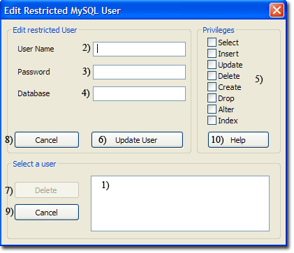
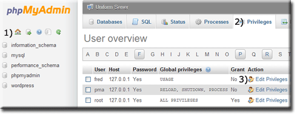

|
|
MySQL Edit Restricted User |
There are three methods for editing a restricted user; you can use UniController, phpMyAdmin or MySQL Console. UniController provides a convenient menu option described below. To use this option, ensure the MySQL server is running; otherwise, a warning message is produced.
Edit Restricted MySQL User using UniController
MySQL > Edit restricted MySQL User
|
Edit Restricted User
Delete Restricted User
|
 |
Edit Restricted MySQL User using phpMyAdmin
Start UniController and start both servers, then click phpMyAmin button. To edit a restricted user, proceed as follows:
Note: The following assumes the user fred has already been created.
|
When first started, the phpMyAdmin home page is displayed; you can always return to this page by clicking the Home icon (1)
The Edit Privileges: User account 'fred'@'127.0.0.1' page is displayed. |
 |
Edit Restricted MySQL User using MySQL Console
Editing an existing user with restricted privileges can be performed using the MySQL Console.
You can use REVOKE to remove some or all privileges, or alternatively use GRANT to add additional privileges. This example assumes a user fred has been created with the privileges GRANT SELECT, INSERT, UPDATE, DELETE assigned on database wordpress.
You can revoke (remove) privileges; for example, the following command removes INSERT, UPDATE and DELETE.REVOKE INSERT, UPDATE, DELETE ON wordpress.* FROM 'fred'@'127.0.0.1' ;
GRANT INSERT, UPDATE ON wordpress.* TO 'fred'@'127.0.0.1' ;
SHOW GRANTS FOR 'fred'@'127.0.0.1';
Example for the above commands
Open MySQL Console window by clicking on MySQL Console button. Then enter the following commands:
SHOW GRANTS FOR 'fred'@'127.0.0.1';REVOKE INSERT, UPDATE, DELETE ON wordpress.* FROM 'fred'@'127.0.0.1' ;SHOW GRANTS FOR 'fred'@'127.0.0.1';GRANT INSERT, UPDATE ON wordpress.* TO 'fred'@'127.0.0.1' ;SHOW GRANTS FOR 'fred'@'127.0.0.1';exit
The results are shown below:
Welcome to the MySQL monitor. Commands end with ; or \g. Your MySQL connection id is 8 Server version: x.x.x MySQL Community Server - GPL Copyright (c) (...), Oracle and/or its affiliates. Oracle is a registered trademark of Oracle Corporation and/or its affiliates. Other names may be trademarks of their respective owners. Type 'help;' or '\h' for help. Type '\c' to clear the current input statement. mysql> SHOW GRANTS FOR 'fred'@'127.0.0.1'; +-------------------------------------------------------------------------------------------------------------+ | Grants for fred@127.0.0.1 | +-------------------------------------------------------------------------------------------------------------+ | GRANT USAGE ON *.* TO 'fred'@'127.0.0.1' IDENTIFIED BY PASSWORD '*F5F0B28BD93FCF0C77FD96BB97BBC745ED8EA6BC' | | GRANT SELECT, INSERT, UPDATE, DELETE ON `wordpress`.* TO 'fred'@'127.0.0.1' | +-------------------------------------------------------------------------------------------------------------+ 2 rows in set (0.00 sec) mysql> REVOKE INSERT, UPDATE, DELETE ON wordpress.* FROM 'fred'@'127.0.0.1' ; Query OK, 0 rows affected (0.00 sec) mysql> SHOW GRANTS FOR 'fred'@'127.0.0.1'; +-------------------------------------------------------------------------------------------------------------+ | Grants for fred@127.0.0.1 | +-------------------------------------------------------------------------------------------------------------+ | GRANT USAGE ON *.* TO 'fred'@'127.0.0.1' IDENTIFIED BY PASSWORD '*F5F0B28BD93FCF0C77FD96BB97BBC745ED8EA6BC' | | GRANT SELECT ON `wordpress`.* TO 'fred'@'127.0.0.1' | +-------------------------------------------------------------------------------------------------------------+ 2 rows in set (0.00 sec) mysql> GRANT INSERT, UPDATE ON wordpress.* TO 'fred'@'127.0.0.1' ; Query OK, 0 rows affected (0.00 sec) mysql> SHOW GRANTS FOR 'fred'@'127.0.0.1'; +-------------------------------------------------------------------------------------------------------------+ | Grants for fred@127.0.0.1 | +-------------------------------------------------------------------------------------------------------------+ | GRANT USAGE ON *.* TO 'fred'@'127.0.0.1' IDENTIFIED BY PASSWORD '*F5F0B28BD93FCF0C77FD96BB97BBC745ED8EA6BC' | | GRANT SELECT, INSERT, UPDATE ON `wordpress`.* TO 'fred'@'127.0.0.1' | +-------------------------------------------------------------------------------------------------------------+ 2 rows in set (0.00 sec) mysql> exit Bye C:\UniServerZ\core\mysql\bin>